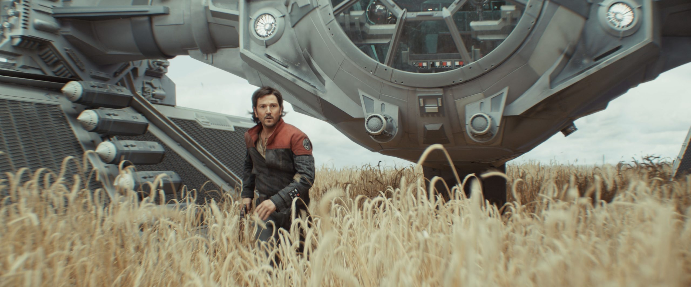
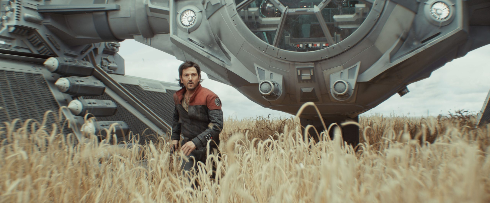
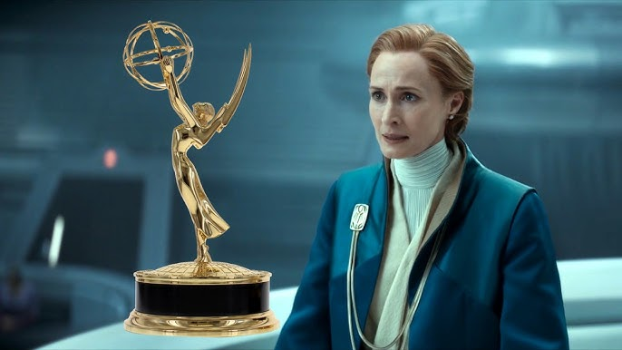
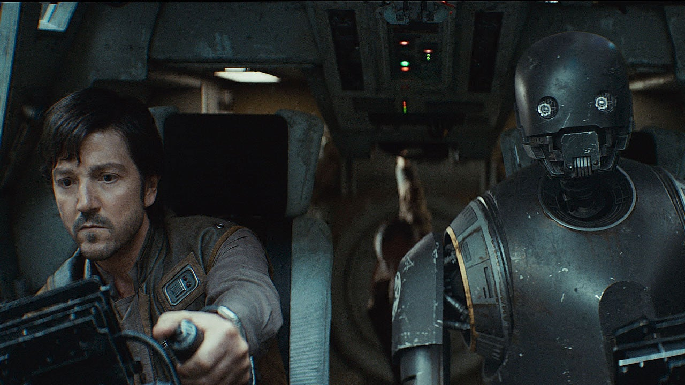

Apr 23, 2025
NIEUWSTE AFLEVERING
Bekijk seizoen 2 aflevering 7 "harvest" nu op disney plus
Bekijk afleveringEen fan website gemaakt door:Mick Peters
Apr 23, 2025
Bekijk seizoen 2 aflevering 7 "harvest" nu op disney plus
Bekijk afleveringSept 15, 2025
Vannacht zijn in de Verenigde Staten van Amerika de prestigieuze Primetime Emmy Awards uitgereikt. Deze prijzen zijn voor...
Bekijk articleMei 15, 2025
Afgelopen week zijn de laatste drie afleveringen van het tweede seizoen van Andor gereleased. Een finale waarin de rebellen groeien, helden vallen en nieuwe helden op staan. Een prachtige opmaat naar...
Bekijk articleMei 14, 2025
In de video "Was 'Andor' a Perfect 'Star Wars' Show? ‘Andor’ Season 2 Finale Reactions | The Midnight Boys" reageren de Midnight Boys op de spannende seizoensfinale van Andor. Met hun...
Bekijk article